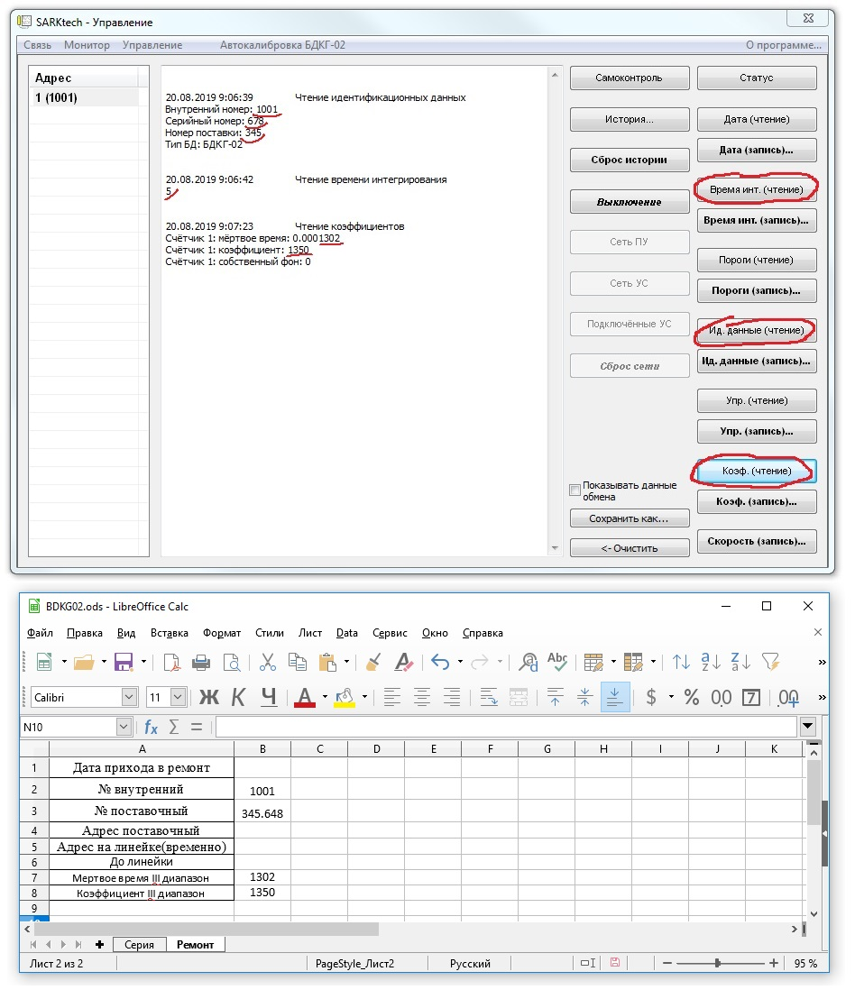
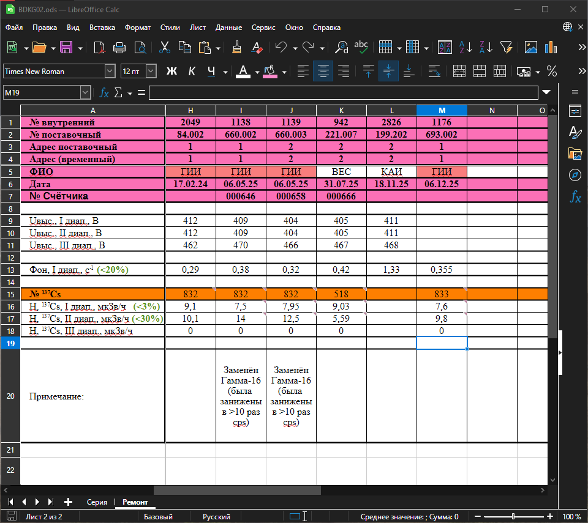
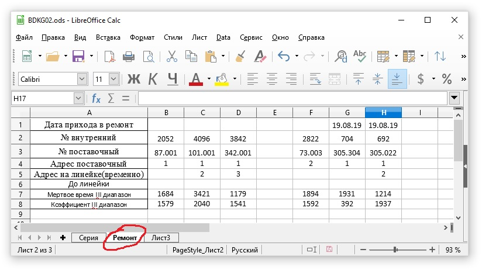
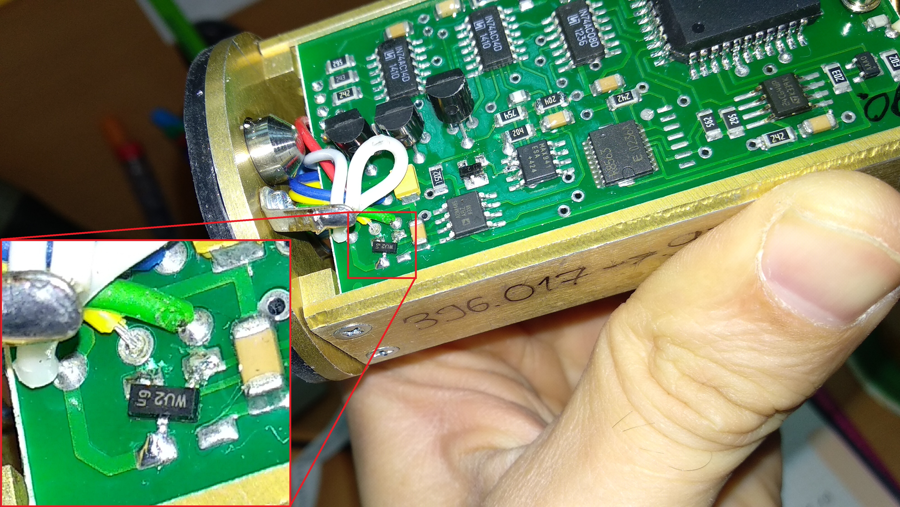
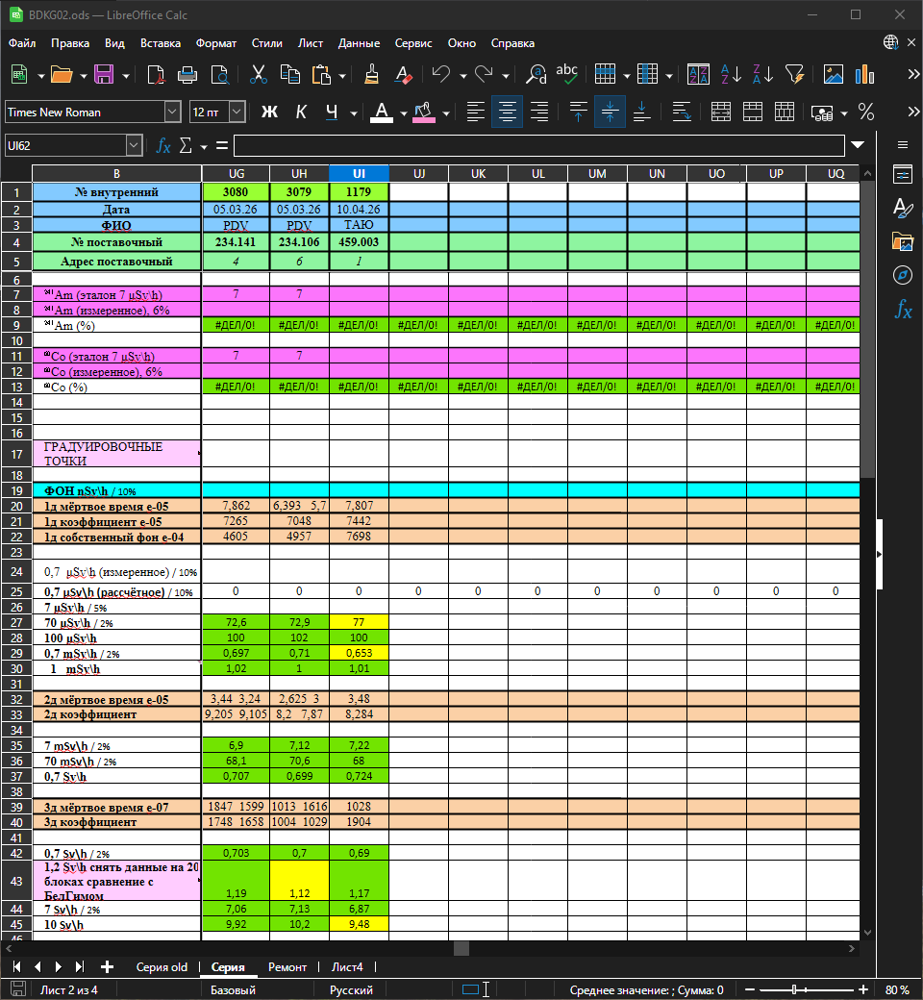

БДКГ-02. Ремонт
- Сделать запись в журнале ремонта (СРК)
- Подключиться через SARKtech (если не подключается)
- Произвести все возможные измерения и занести данные в базу настроек (вкладка "Ремонт"). Если блок разбирается - произвести измерения всех параметров с фиксацией в базу настроек (вкладка "Ремонт").
- Прочитать "Инд. данные" — проверить, совпадают ли номера, если нет — исправить
- "Время интегрирования" — поставить значение 255 (в ремонт приходят со значением 5)
- Открыть Журнал градуировки БДКГ-02
- Выбрать вкладку "Ремонт"
- Заполнить все поля для каждого блока
- Дату прихода в ремонт
- Внутренний номер
- № поставочный (№ = "Номер поставки" + "Серийный номер")
- Адрес поставочный

- Если БД разбирается, сделать доработку по защите линии обмена (A и B) от статики (диодная сборка с PESD12VS2UT)
- Желательно перепаять со 100V на 200V
- В маршрутном листе на ремонт сделать отметки с датой напротив пунктов «Градуировка АТ110» и «Градуировка АТ130»
- Отдать на линейку


Обязательно записать адрес блока! В процессе работы над БД адрес может поменяться,
а заказчику блок должен вернуться с тем же адресом, что и пришел.

После того, как БД вернется с линейки
- Открыть Журнал градуировки БДКГ-02
- Проверить градуировочные точки
- Мёртвое время 1000 < МВ < 1500
- Коэффициент 1300 < К < 2000
- Проверить на герметичность
- Сделать (калибровку фона и снять показания с источником)
- Заполнить графу отчет (таблица снизу) маршрутного листа о ремонте (выявленные дефекты, принятые меры). При заполнении отчёта конкретно указывать неисправность и как она была обнаружена, заменённые элементы указывать с обозначением на схеме (к примеру, требуют замены: резистор (R21, плата УУ) SMD-1206…)
- Отдать маршрутный лист на склад для выписки накладных на ремонт
- Если требуется государственная поверка, то подготовить протокол поверки, если не требуется – протокол проверки (для русскоязычного пользователя) или сертификат (для англоязычного или иного пользователя). Отдать документы (протокол или сертификат и маршрутный лист) заместителю начальника УРИиР для дальнейшей передачи на государственную поверку или на подпись
- В отчете о ремонте отметить:
- "Диагностика ..."
- Если разбирался — "установка контрольных пломб"
- Если поверялся — "подготовка к гос. поверке" и "Гос поверка"
- Поставить "время инт" — 5
- Проверить адрес блока, если менялся — поставить какой надо
- Готово

Значения коэффициентов в 3-ем диапазоне для БДКГ-02 с хорошим счётчиков Гейгера-Мюллера: